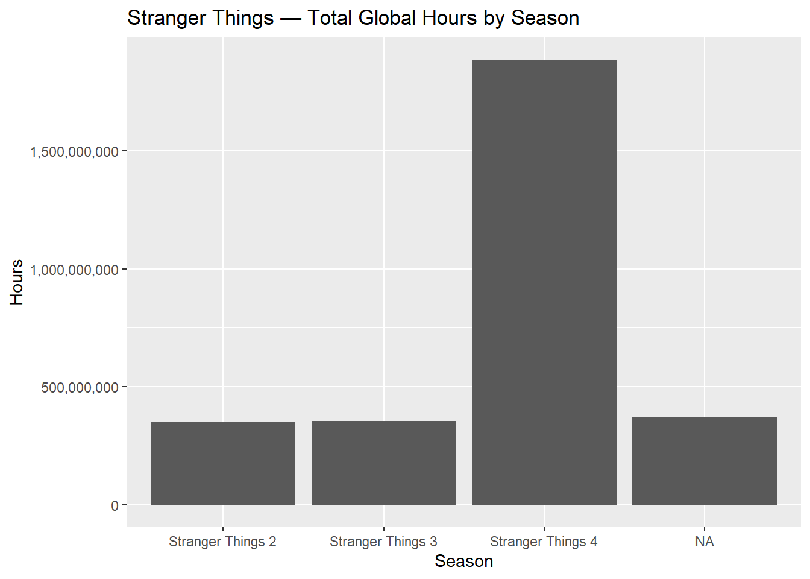
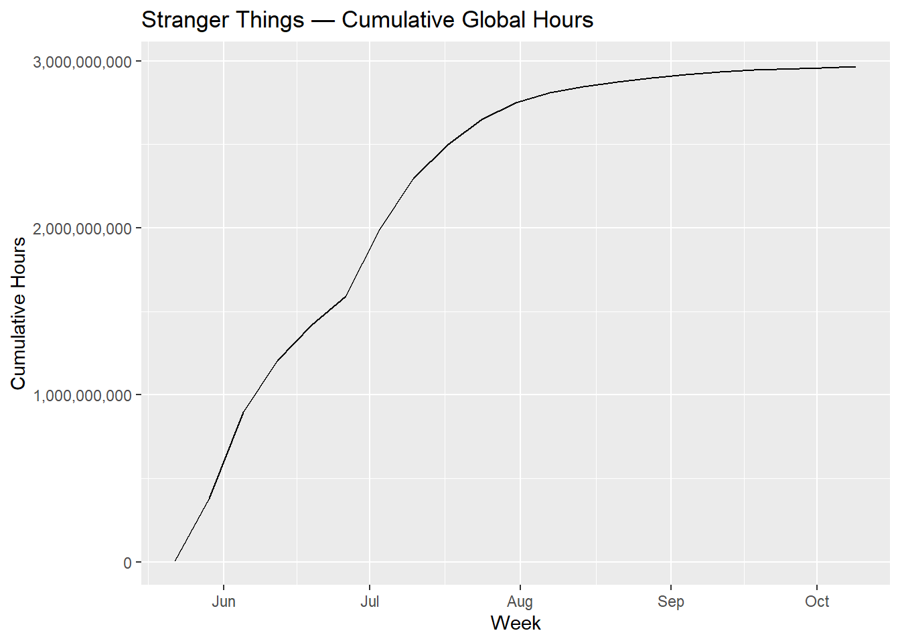
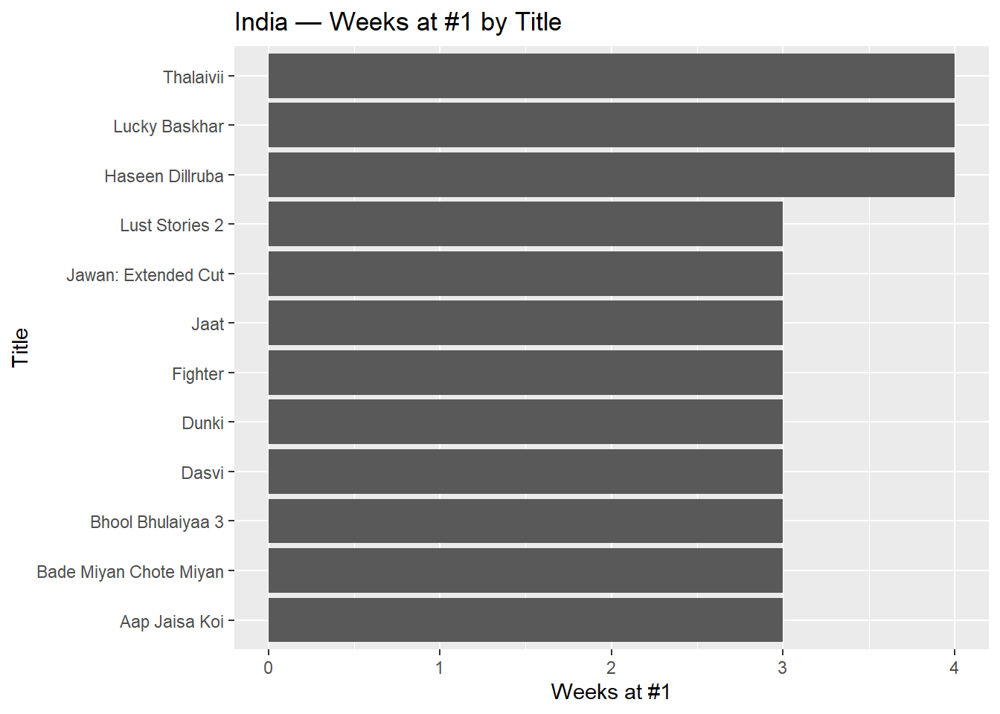
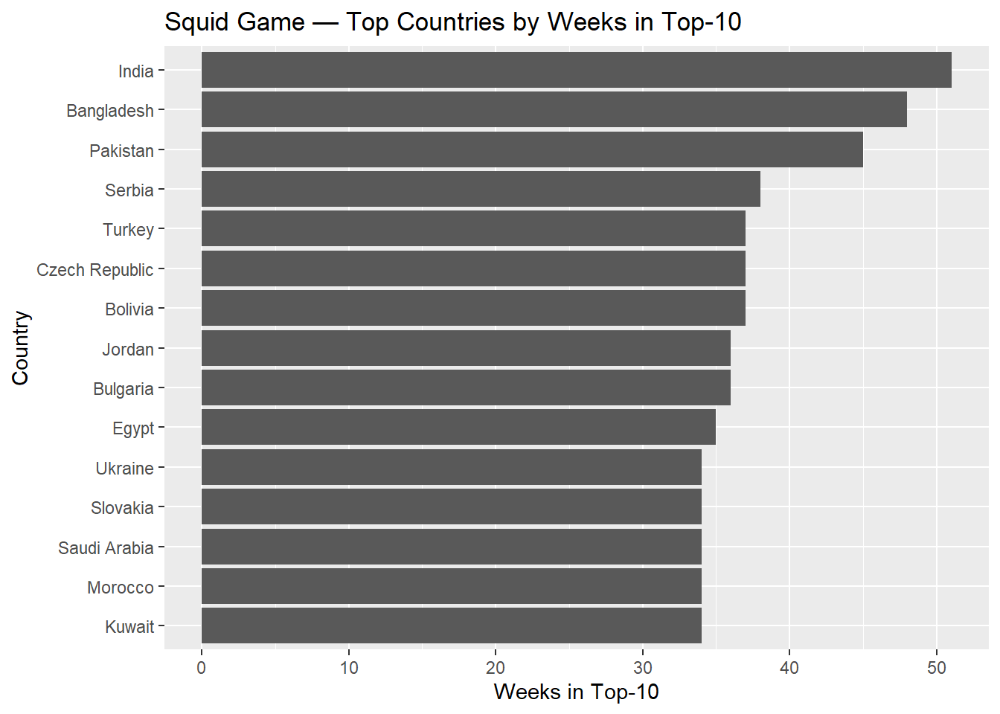
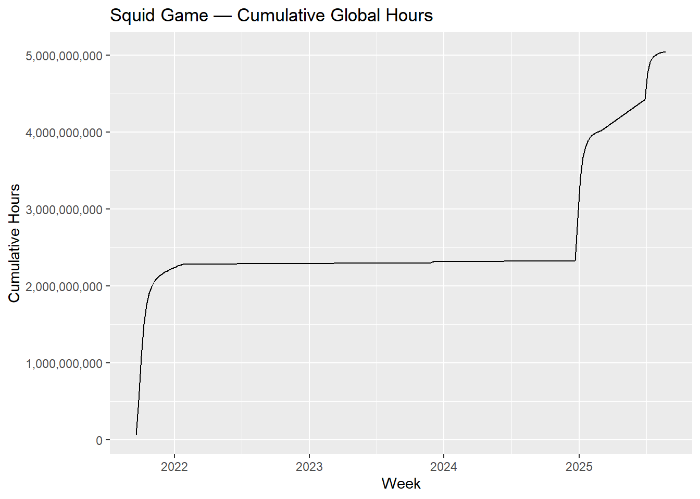
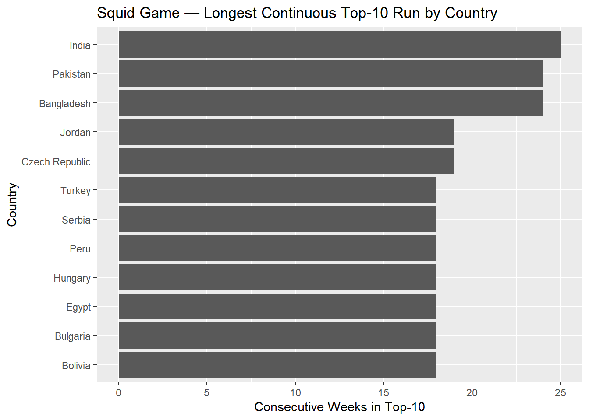

# Install once if neededif (!require("DT")) install.packages("DT")library(DT)# Show a small interactive preview of the global datatbl <- GLOBAL_TOP_10 |>head(n =20) |>datatable_dark()# (optional) also preview the country-level datatbl_country <- COUNTRY_TOP_10 |>head(n =20) |>datatable_dark()
Cleaned Preview Table
Code
# header formatting helperif (!require("stringr")) install.packages("stringr")library(stringr)format_titles <-function(df){colnames(df) <-colnames(df) |>str_replace_all("_", " ") |>str_to_title() df}# Build the pretty table from GLOBAL_TOP_10tbl <- GLOBAL_TOP_10 |>format_titles() |>head(n =20) |>datatable_dark()# Round / format the numeric columns if presentnum_cols <-intersect(c("Weekly Hours Viewed", "Weekly Views"), colnames(tbl$x$data))DT::formatRound(tbl, columns = num_cols, digits =0)
Film-only Preview
Code
# Build the table while dropping `season_title`tbl2 <- GLOBAL_TOP_10 |> dplyr::select(-season_title) |>format_titles() |>head(n =20) |>datatable_dark()# Format big numbers if presentnum_cols <-intersect(c("Weekly Hours Viewed", "Weekly Views"), colnames(tbl2$x$data))DT::formatRound(tbl2, columns = num_cols, digits =0)
Runtime in Minutes
Code
# If your dataset has a 'runtime' (in hours), convert to minutes and show a tidy previewif ("runtime"%in%names(GLOBAL_TOP_10)) { tbl3 <- GLOBAL_TOP_10 |> dplyr::mutate(`runtime_(minutes)`=round(60* runtime)) |> dplyr::select(-season_title, -runtime) |>format_titles() |>head(n =20) |>datatable_dark()# Format big numeric columns if present num_cols <-intersect(c("Weekly Hours Viewed", "Weekly Views"), colnames(tbl3$x$data)) DT::formatRound(tbl3, columns = num_cols, digits =0)} else {message("No 'runtime' column found in GLOBAL_TOP_10; skipping this view.")}
Question Setup
Code
# Figure out which column holds the country namecountry_col <-intersect(names(COUNTRY_TOP_10), c("country", "country_name"))[1]stopifnot(!is.na(country_col)) # fail early if neither exists
Q1 — Countries with Top-10 data (proxy for “operates in”)
# A tibble: 4 × 3
category show_title total_hours
<chr> <chr> <dbl>
1 Films (English) KPop Demon Hunters 591300000
2 Films (Non-English) Society of the Snow 235900000
3 TV (English) Stranger Things 2967980000
4 TV (Non-English) Squid Game 5048300000
Q5 — Longest Top-10 run for a TV show in any one country
Warning: Use of .data in tidyselect expressions was deprecated in tidyselect 1.2.0.
ℹ Please use `all_of(var)` (or `any_of(var)`) instead of `.data[[var]]`
The following object is masked from 'package:purrr':
discard
The following object is masked from 'package:readr':
col_factor
Code
st_global <- GLOBAL_TOP_10 %>%filter(grepl("^TV", category), show_title =="Stranger Things")st_by_season <- st_global %>%group_by(season_title) %>%summarise(weeks =n_distinct(week),hours =sum(.data[[hours_col_g]], na.rm =TRUE),.groups ="drop" ) %>%arrange(season_title)st_total_hours <-sum(st_by_season$hours, na.rm =TRUE)st_longest_season <- st_by_season %>%slice_max(weeks, n =1)st_countries <- COUNTRY_TOP_10 %>%filter(grepl("^TV", category), show_title =="Stranger Things") %>%summarise(n_countries =n_distinct(.data[[country_col]])) %>%pull(n_countries)# Chartsggplot(st_by_season, aes(x = season_title, y = hours)) +geom_col() +labs(title ="Stranger Things — Total Global Hours by Season",x ="Season", y ="Hours") +scale_y_continuous(labels =label_comma())

Code
st_weekly <- st_global %>%group_by(week) %>%summarise(hours =sum(.data[[hours_col_g]], na.rm =TRUE), .groups ="drop") %>%arrange(week) %>%mutate(cum_hours =cumsum(hours))ggplot(st_weekly, aes(x = week, y = cum_hours)) +geom_line() +labs(title ="Stranger Things — Cumulative Global Hours",x ="Week", y ="Cumulative Hours") +scale_y_continuous(labels =label_comma())

India Commercial Success
Code
# packagessuppressPackageStartupMessages({library(dplyr)library(ggplot2)})india <- COUNTRY_TOP_10 %>%filter(.data[[country_col]] =="India") %>%arrange(week)## 1) #1 winners: which titles spent the most weeks at #1?india_no1 <- india %>%group_by(week) %>%slice_min(weekly_rank, with_ties =FALSE) %>%# one #1 per weekungroup()no1_by_title <- india_no1 %>%count(show_title, name ="weeks_at_no1") %>%arrange(desc(weeks_at_no1)) %>%slice_head(n =12)ggplot(no1_by_title,aes(x = weeks_at_no1, y =fct_reorder(show_title, weeks_at_no1))) +geom_col() +labs(title ="India — Weeks at #1 by Title",x ="Weeks at #1", y ="Title")

Code
## 2) Longest #1 streaks (consecutive weeks at #1)# run-length encoding across weeksstreaks <- india_no1 %>%mutate(change = show_title != dplyr::lag(show_title, default =first(show_title)),streak_id =cumsum(change)) %>%group_by(streak_id, show_title) %>%summarise(streak_weeks =n(),start =min(week),end =max(week),.groups ="drop" ) %>%arrange(desc(streak_weeks)) %>%slice_head(n =10)streaks # small table to quote in the PR
# A tibble: 3 × 3
season_title weeks hours
<chr> <int> <dbl>
1 Squid Game: Season 1 32 2729400000
2 Squid Game: Season 2 14 1445500000
3 Squid Game: Season 3 9 873400000
Code
## Visual 1: Top countries by *weeks in Top-10*sg_top_countries <- sg_country %>%group_by(.data[[country_col]]) %>%summarise(weeks =n_distinct(week), .groups ="drop") %>%slice_max(weeks, n =12) %>%arrange(weeks)ggplot(sg_top_countries,aes(x = weeks, y =reorder(.data[[country_col]], weeks))) +geom_col() +labs(title ="Squid Game — Top Countries by Weeks in Top-10",x ="Weeks in Top-10", y ="Country" )

Code
# top 3 country names for inline copysg_top3 <- sg_top_countries %>%arrange(desc(weeks)) %>%slice_head(n =3) %>%pull(.data[[country_col]])## Visual 2: Cumulative global hours over timesg_weekly_hours <- sg_global %>%group_by(week) %>%summarise(hours =sum(.data[[hours_col_g]], na.rm =TRUE), .groups ="drop") %>%arrange(week) %>%mutate(cum_hours =cumsum(hours))ggplot(sg_weekly_hours, aes(x = week, y = cum_hours)) +geom_line() +labs(title ="Squid Game — Cumulative Global Hours",x ="Week", y ="Cumulative Hours" ) +scale_y_continuous(labels =label_comma())

Code
## Visual 3: Longest continuous Top-10 run by country (streak)# (any rank 1–10)sg_streaks <- sg_country %>%arrange(.data[[country_col]], week) %>%group_by(.data[[country_col]]) %>%mutate(gap =as.integer(week) -as.integer(lag(week)),new_block =if_else(is.na(gap) | gap >7, 1L, 0L), # gaps > 1 week break streakblock_id =cumsum(coalesce(new_block, 0L)) ) %>%group_by(.data[[country_col]], block_id) %>%summarise(streak_weeks =n(), start =min(week), end =max(week),.groups ="drop" ) %>%group_by(.data[[country_col]]) %>%slice_max(streak_weeks, n =1, with_ties =FALSE) %>%ungroup() %>%slice_max(streak_weeks, n =12) %>%# show top 12 longest streaksarrange(streak_weeks)ggplot(sg_streaks,aes(x = streak_weeks, y =reorder(.data[[country_col]], streak_weeks))) +geom_col() +labs(title ="Squid Game — Longest Continuous Top-10 Run by Country",x ="Consecutive Weeks in Top-10", y ="Country" )

Code
# pull the single longest streak for inline copysg_longest_streak <- sg_streaks %>%slice_tail(n =1)
Stranger Things Paragraph Helper
Code
# convenience values for the paragraphst_top_hours <- st_by_season %>% dplyr::slice_max(hours, n =1)st_top_hours_share <- st_top_hours$hours / st_total_hoursst_n_seasons <- st_by_season %>% dplyr::filter(!is.na(season_title)) %>%nrow()
Stranger Things Press Release
Headline:Stranger Things surges worldwide as fans stream 2,967,980,000 hours across 3 seasons.
With the final chapter approaching, Stranger Things remains a global phenomenon. Viewers have streamed 2,967,980,000 hours in total, with Stranger Things 4 alone accounting for 63.6% of lifetime viewing. The franchise’s staying power is clear: Stranger Things 4 logged 19 distinct weeks in Netflix’s global Top 10, and the series has charted in 93 countries. Momentum is visible in the rapid climb of cumulative hours following recent releases, underscoring the show’s broad, durable appeal ahead of the upcoming season.
India Paragraph Helper
Code
# ---- India PR helper (combined: data + neat sentences) ----suppressPackageStartupMessages({library(dplyr); library(glue)})if (!exists("country_col")) country_col <-"country_name"india <- COUNTRY_TOP_10 %>%filter(.data[[country_col]] =="India") %>%arrange(week)# #1 by week (one per week)india_no1 <- india %>%group_by(week) %>%slice_min(weekly_rank, with_ties =FALSE) %>%ungroup()no1_by_title <- india_no1 %>%count(show_title, name ="weeks_at_no1") %>%arrange(desc(weeks_at_no1))# Longest consecutive #1 streaksstreaks <- india_no1 %>%mutate(change = show_title !=lag(show_title, default =first(show_title)),streak_id =cumsum(change)) %>%group_by(streak_id, show_title) %>%summarise(streak_weeks =n(),start =min(week), end =max(week), .groups ="drop") %>%arrange(desc(streak_weeks))# Top persistent TV titles (weeks in Top-10)india_top_titles <- india %>%group_by(category, show_title) %>%summarise(weeks =n_distinct(week),best_rank =min(weekly_rank, na.rm =TRUE),.groups ="drop")india_tv_top <- india_top_titles %>%filter(grepl("^TV", category)) %>%slice_max(weeks, n =10, with_ties =FALSE) %>%arrange(desc(weeks))# Totals for paragraphind_total_no1_weeks <-nrow(india_no1)# --- Nicely phrased sentences ---oxford <-function(x){if (length(x) <=1) return(paste0(x))if (length(x) ==2) return(paste(x, collapse =" and "))paste0(paste(x[-length(x)], collapse =", "), ", and ", x[length(x)])}# Biggest #1 winner(s)top_no1_weeks <-max(no1_by_title$weeks_at_no1, na.rm =TRUE)top_no1_titles <- no1_by_title %>%filter(weeks_at_no1 == top_no1_weeks) %>%pull(show_title)ind_no1_sentence <-if (length(top_no1_titles) ==1) {glue("The biggest #1 winner was **{top_no1_titles}**, holding the top spot for **{top_no1_weeks}** weeks.")} else {glue("The biggest #1 winners were **{oxford(top_no1_titles)}**, each holding the top spot for **{top_no1_weeks}** weeks.")}# Longest streak(s)long_weeks <-max(streaks$streak_weeks, na.rm =TRUE)long_streaks <- streaks %>%filter(streak_weeks == long_weeks) %>%mutate(range =glue("{start}–{end}")) %>%arrange(show_title)if (nrow(long_streaks) ==1) { ind_streak_sentence <-glue("The longest consecutive run was **{long_weeks}** weeks by **{long_streaks$show_title}** ({long_streaks$range})." )} else { shown <-head(long_streaks, 3) bits <-glue("**{shown$show_title}** ({shown$range})") more <-if (nrow(long_streaks) >3) " (ties omitted)"else"" ind_streak_sentence <-glue("The longest consecutive run was **{long_weeks}** weeks, achieved by {oxford(bits)}{more}." )}# Persistence sentenceind_persist_sentence <-glue("Beyond weekly leaders, staying power in the Top-10 was dominated by series such as **{oxford(head(india_tv_top$show_title, 3))}**.")
Press Release 2 — Commercial Success in India
Headline: Netflix India keeps the hits coming, with consistent #1 winners and long Top-10 runs.
India’s audience continues to show strong engagement on Netflix. Across the period observed, titles captured the #1 spot in the country for 222 distinct weeks. The biggest #1 winners were Haseen Dillruba, Lucky Baskhar, and Thalaivii, each holding the top spot for 4 weeks. The longest consecutive run was 4 weeks, achieved by Haseen Dillruba (2021-07-04–2021-07-25), Lucky Baskhar (2024-12-01–2024-12-22), and Thalaivii (2021-09-26–2021-10-17). Beyond weekly leaders, staying power in the Top-10 was dominated by series such as Squid Game, Money Heist, and The Great Indian Kapil Show.
Press Release 3 — Squid Game extends its global dominance
Headline:Squid Game reaches fans worldwide, crossing 5,048,300,000 hours over 42 weeks in Netflix’s global Top-10.
Squid Game continues to deliver blockbuster engagement on Netflix. To date, viewers have streamed 5,048,300,000 hours across 3 seasons, with Squid Game: Season 1 contributing 54.1% of lifetime viewing. The series has charted in 94 countries and sustained long national runs—its longest continuous Top-10 streak reached 25 weeks (e.g., India, 2021-09-19–2022-03-06). Top markets by weeks in the Top-10 include India, Bangladesh, Pakistan, reflecting durable, multinational demand that spikes around major release windows.